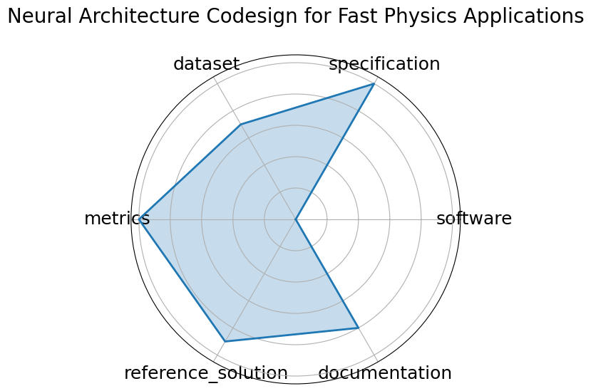

Date: 2025-01-09
Name: Neural Architecture Codesign for Fast Physics Applications
Domain: Physics; Materials Science; Particle Physics
Focus: Automated neural architecture search and hardware-efficient model codesign for fast physics applications
Keywords: neural architecture search, FPGA deployment, quantization, pruning, hls4ml
Task Types: Classification, Peak finding
Metrics: Accuracy, Latency, Resource utilization
Models: NAC-based BraggNN, NAC-optimized Deep Sets jet
Citation:
Jason Weitz, Dmitri Demler, Luke McDermott, Nhan Tran, and Javier Duarte. Neural architecture codesign for fast physics applications. 2025. URL: https://arxiv.org/abs/2501.05515, arXiv:2501.05515.
bibtex: ``` @misc{weitz2025neuralarchitecturecodesignfast,
archiveprefix={arXiv},
author={Jason Weitz and Dmitri Demler and Luke McDermott and Nhan Tran and Javier Duarte},
eprint={2501.05515},
primaryclass={cs.LG},
title={Neural Architecture Codesign for Fast Physics Applications},
url={https://arxiv.org/abs/2501.05515},
year={2025}}
```
Ratings:
Software:
Rating: 3
Reason: Toolchain hls4ml, nac-opt described but not yet containerized or fully packaged
Specification:
Rating: 5
Reason: Fully specified task with constraints and target deployment; includes hardware context
Dataset:
Rating: 2
Reason: Simulated datasets referenced but not publicly available or FAIR-compliant
Metrics:
Rating: 5
Reason: Clear, quantitative metrics aligned with task goals and hardware evaluation
Reference Solution:
Rating: 4
Reason: Models tested on hardware with source code references; full training pipeline not yet released
Documentation:
Rating: 4
Reason: Detailed paper and tools described; open repo planned but not yet complete
Average Rating: 3.833
Radar Plot: 